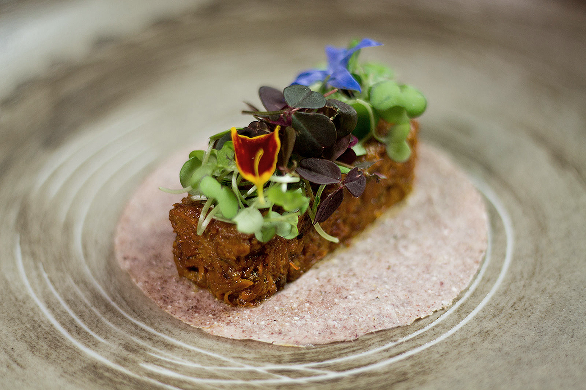
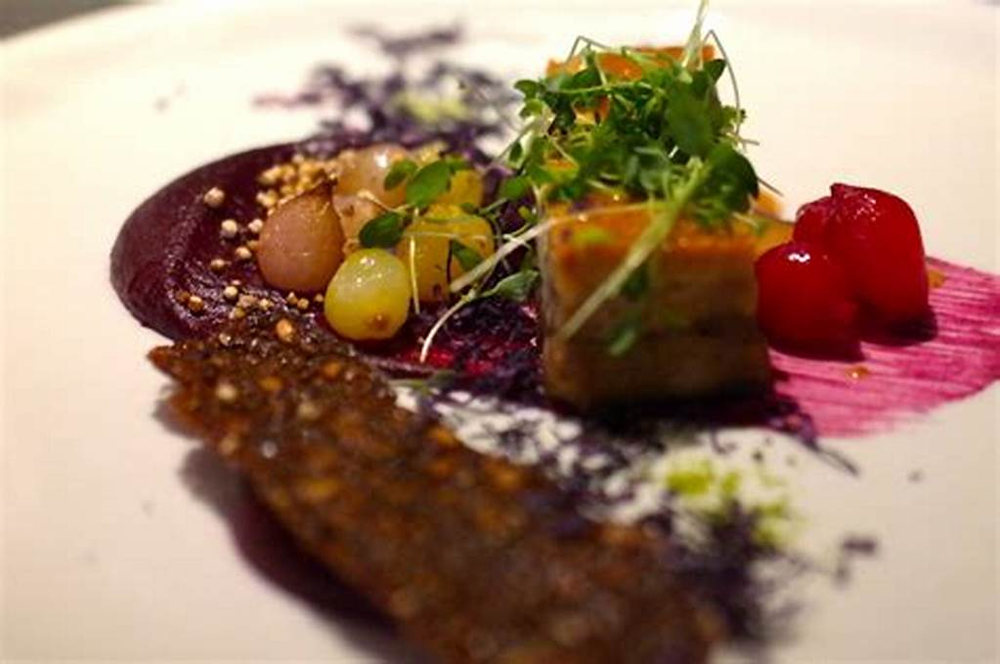
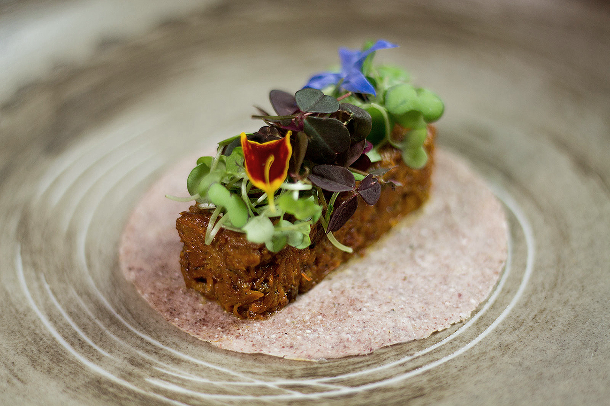
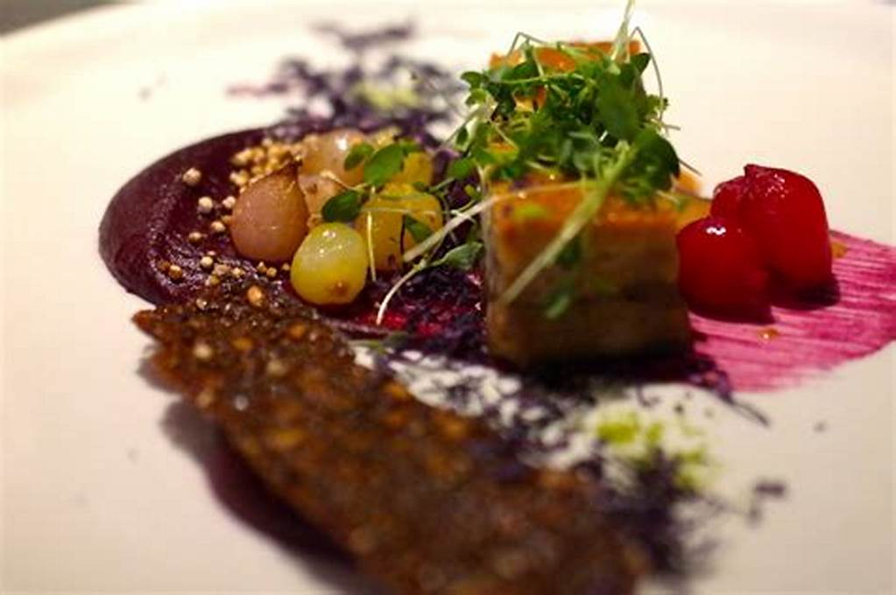
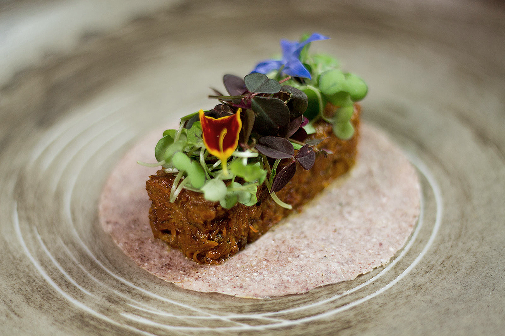
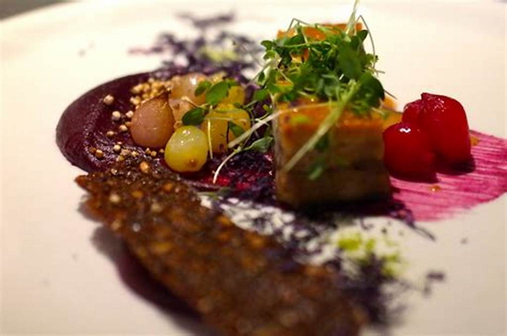

CANELO ECOBAR
sostenibilidad en la mesa
CANELO ECOBAR valora la tierra: planta, cultiva y recolecta alimentos. Ecogastronomia es parte de la premisa y el concepto de comida que se ofrece en La Martina. El menú está inspirado en la comida producida localmente.
COMER ALGO
Descubre sabores inspirados en la cocina local con un toque contemporáneo.

